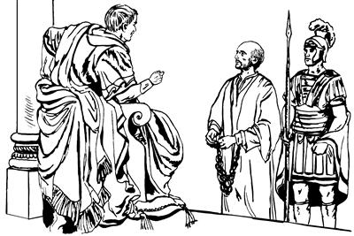

Agripa whingag agha Paulusti, pelebel tanan yubu lebogha (26:1-11)
26
1 Wene aro ambatsiogpa, Agripa ponekori Paulusag, “Wene andi ulamlamne sembe pelebel tanan yubu leplulam,” seogpa, Paulusti, sae la'abatsiogti, yubu lelamogti, 2 “Yubu sia leropne Agripa nani, Yahudi nimiri lolorop yubu nanag lolbaneongne sembe sumene an whingag agha pelebel tanan yubu lag phoro lemnunne sembe awi yeng uro wamna. 3 Yahudi nimiri sikinisari ulamekne saelba ulamangneap, tam sin anabiag lag taongeap ni ane sembe an el wamlam. An el wamlamba, nari ambatkinunne andi wana palingkina wali ka'eamnululamba, mololangken. 4 Na nari asag agha mangkaneekpa, na kabuniag agha Yahudi nimiri saelba ulamekti, ulamekne ambaneek. Ambaneekpa, as Yerusalem ane babe yahiba, nen anea ma'aro ambaneek. Ambaneekpa, na yabalamsiri, ulamsia Yahudi nimi as Yerusalem wamekneri imneekne sin el wamang. 5 Sin samenag agha na sembe sin ni el wamang. Sindi agha, na Farisinge wamsiri, Musari yubu toro pibogne sembe mikip uro saelbamsiri, yubu ane sunsunum uro ul palamsinge ‘Hae lebukap,’ sembaik, tanena ambarelamsinne sembe ‘Sik lepla,’ aro lebukang. 6 Na wene ane sekamnangena, ‘Allahri nunisa yaboag “Undo uanun,” aro salag pibogne sunsunum uro sik talul,’ senelamnari, nang-nang aro ulamna. ‘Allahri, “Uanun,” seogne sik talul,’ aro nang-nang aro ulamnange sembe nimiri saelbaneongdi, wene ane tam kareptop nang whingag payaneongba, sekamna. 7 Nu Yahudinang sisa aobare wamapne nene, ‘Allahri samenag salag pibogne sunsunum uro sik talul,’ aro nu niri sinag kweleknag sol wali, wali uro Allah omeklamekne saog uro nu babe nang-nang aro omeklamap. Nani Agripa, undo seneraglamekti, ulamekne sunsunum uro ulamnonge sembe Yahudi nimiri nanag, ‘Tam malinge ulamlam,’ alamangpa, na wene pelebeltanan yubu ambarelangken. 8 Nangkabo, sa'a sembe a'undina, ‘Allahri nimi teptopne kamag nembanep kom,’ aro seneraglamlom?9 Samenag nari babe, ‘ “Yesus Nasaretne si nubu taleag,” aro yo uro ulamsinun,’ senelamsi. 10 Lemnange nene as Yerusalemag unulamsisi. Memnang Allah sembe pairopnang sikindo yabo tanekori, ‘Nuri sae wamla,’ aro yubu nanag pibekpa, nimi Yesusag ‘Sikne’ aro seneragtop nimi maikno haing sae kaupto kop aeag tobonglamsisi. Kop aeag tobongolamsisiri, ‘Ya'ag tepnange babe wali tebaik,’ aro yubu lepsiri, Yahudi nimi nubunangap saekag lebubuag agha, Yesusag seneraglemek nimi ya'ag opsiek. 11 Yahudi nimiri Allah yubu lerop ae nhonag pang nhonag pang ulamsisiri, ‘Yesusag seneraglamangne sembe opsukap,’ aro sen-senna elamsisi. Elamsisiri, ililamsisiri, ‘Yesus san tiliplopsisut,’ aro ambarelamsisi. Yo maikno senelamsisiri, kota maikno weag wamekag babe el palamsisiri, ‘Seklebaukang,’ aro ul palamsisi,” aro Paulusti nimi nubunge Agripa whingag ambatsiog.
“Na Yesusti yopneog,” aro Paulusti ambatsiogha (26:12-23)
12 Paulusti nen tipto ambarelamsiogti, “Undo unulamsiba, memnang Allah sembe pairopnang sikindo yabo tanekori, ‘Nuri sae wapmendi, as Damsyik pimendi, undo-undo ualulam,’ aro ambatneekpa, ‘As Damsyik punun,’ aro palamsi. 13 Nani Agripa, yubu sia lelamlamne, inaag palamsiba ae siro heng ik molmol alamog abene heng tingirop saog komne tibin warerop sirikne imag agha nanap nangkabo palamubu nangag warelopsiog. 14 Warelamsiog abeneko nangkaboap nu so'oag malingkiburi, ka'elamsiba yubu nhon Ibrani yubuag lelamogti, ‘Saulus, Saulus sa'a sembe “Seklebale,” aro Na ulamnelam? Eldi yagto pabalangkelne pheleptangka pululam kom. Pheleptangka palapmen tanena og seklebalulam,’ alamogpa ka'ebahi. 15 Wene alamogpa ka'ebahairi narina, ‘Nai, an etneri lelamlam?’ sihiba, Eldina, ‘Na Yesus andi “Seklebale,” aro ulamnelamne ponekori lelamna,’ alamogha ka'ebahi. 16 Eldina, ‘Wene pukmendi, sekelabi. An “Na arukna wapmendi, wene imnelamneap amik Nari ‘Ualulam,’ sununneap nimi ambarelamsululam,” aro Nari sekitkunundi, an haingag lag tan. 17 Nari an poglangkenne, “Yahudi nimiap, Yahudi sisa kom nimi as tala-tala wamang nimiap babe sin wamangag pululam,” aro poglangken. Poglangkenne saelbaghiikpa, Yahudi nimiri saeag agha babe, Yahudi sisa kom nimi mog so'o as tala-tala nimiri saeag agha babe, Nari sae lopkenun. 18 Poglangkenba, sin wamangag pimendi, sin nimi taneko haing uropne haing kwelekel palamsululam. Haing kweleklamsimenba, inibinag lilobiagha samoro tibinag yalamukang. “Haing kwelekamikti, phia sikini nubunge Satanasa nenekori saeag agha sae loptangom agha Allahag samoro yalamikpa, Allahri saelbamsukang,” aro poglangken. “Sindam nimiri Na Yesusag ‘Sikne’ aro seneraglamik tanena, Allahri ‘Naringe aghabog wamukang,’ aro wepsirop nimi sembe sindi malia ulamangne tam orog nembaleba, Allah Eldamne mabo taukang,” aro poglangken,’ aro Yesusti ambatneo. 19 Ane sembe, nani Agripa, yubu sia lelamlamne, Yesus imagne ponekori kekneba nanag uaori, yubu ambatneonge sunsunum uro ul palamno. 20 As Damsyika nimi Yahudi nimi wamekneag agha alnina alnibahiri, kota Yerusalem nimiap, Yudea so'oag urop nimiap, Yahudi nimiap babe, Yahudi sisa kom nimi babe Allah yubu ambarelamsisi. Sinag ambarelamsisiri, ‘Malinge ulamlomne lilobiagha Allahag samoro yamundi, Allah Elag wanaag seneraglapmundi, Allahri “Walinge,” seneropne aghabog ulamlulom. Allahri “Walinge” seneropne aghabog undo unulapmunba, nimiri “Malinge ulamangne lilobiagha Allah Elmabo taang,” aro el tanep,’ aro ambarelamsisi. 21 Undo wene aro ambarelamsisinge sembe Yahudi nimiri Allahri Ae aramag agha saelbaneekti, “Ya'ag obukap,” aro uaneek. 22 Undo “Obukap,” aro uaneek aghana, Allahri samenag agha yeplamneoa wene babe piamnelba, wamna. Wamnari wene ane sekamnari, nari haingdi ipsinge nimi ologne nubunge ambarelamsin. Nari ambarelamsinnena, samen Allahri yubu silimu tiplamek nangdi lebekne mome toro pibekneapna Musa yubuap agha ambarelamsin. Yogne agha ambarelamsin kom. 23 Samenag Musaap Allah yubu silimu tiplamek nangapti ambarelamsiekne nenena, ‘Allahri “Mog so'oag nimi taulbahilulam,” aro wepto poghol aogne poneko seklero tebaleba, Allahri nimi teptopne ua urobag agha El samenag kamag nembalul. Kamag nembaleba, elkabo Yahudi nimi elap nikag wamangne babe, Yahudi sisa kom nimi babe, “Allahri Na pere agha taulbahilul,” aro wepto poghol aogne ponekori tibin nenero ambarelamsilul,’ aro ambarelamsiekpa, nen tipto ambarelamsin,” aro Paulusti ambatsiog.
Paulusti Agripaag amberalmogti, “Yesusag sikne aro seneraglame,” aro ambarogha (26:24-32)
24 Paulusti, “Undo-undo ulamsi,” aro pelebeltanan yubu ambarelamsiog abeneko, Festus ponekori yubu mikip uro lelamogti, “Paulus, an serem ulangkelba, lelamlam. ‘Nia mangkina el tahane,’ aro el talamlam aghana senaragna maiknori serem ulamlam,” seog.
25 Wene seogpa, Paulusti samoro, “Na serem saelbanelba, lelamna kom. Festus nani walinge, na seneragna walinge sikne agha lelamna. 26 Nani Agripa, yubu sia lelamlamne, lelamnange tane an babe el wamlam. El wamlam ane sembe na log kom uro, nani, an whingag lag phoro lelamna. Na el wamnange ni lemnange tane, nani, an ekonne nhon lemna kom. Lemnange uro yabionge agha lemna. Nen tognorobag agha uro yabiogne agha lemna kom. 27 Nani Agripa, yubu sia lelamlamne, samen Allahri yubu silimu tiplamek nangdi lebekne sembe sik senelamlam, te? Na elwamnange, nani, andi babe sik senelamlam,” seog.
28 Wene seogpa Agripari, “Andi senelamlamne, ‘Wene abene, nari olog yubu lemnange ka'ebiagha Kristen nimi talul,’ senelamlam, te?” seog.
29 Wene seogpa Paulusti, “Na Allahag molona molbanun, wene babe to, olog wamebeba babe to, an aghabog kom. Anap ane nimi wamang nimiap sembe, ‘Nari yubu ka'ebaneang nimi tane na saog taukang. Na saog taikpa, nimi tanena haing sae kaupto pipsiseng kom,’ aro Allahag mololamna,” seog.

Paulus Festus whingag haing sae kaupto wamogha (ACT 26.29)
30 Wene aro Paulusti ambatsiogpa, nimi nubunge yubu sia leropne Agripaap, ilipsa'el Bernikeap, wamekag mog so'o saleropne Festusap, nimi ni sinap pukamekne tanekoap sekekti, 31 lanalamekti sin mo-mo yubu leple palamekti, “Nimi ene uaoa sunsunum uro kop aeag tolongoro babe, ya'ag onne babe, tamna orog wamla,” aba palamek.
32 Wene aba palamekpa, Agripa ponekori Festusag ambarelamogti, “Nimi eneri ‘Kaisarag pinun,’ sele kom tanena kop aeag agha sae lopto lambitsebe. Aghana, eldamneri ‘Kaisarag punun,’ seo ane sembe Kaisarag pabukap,” seog.